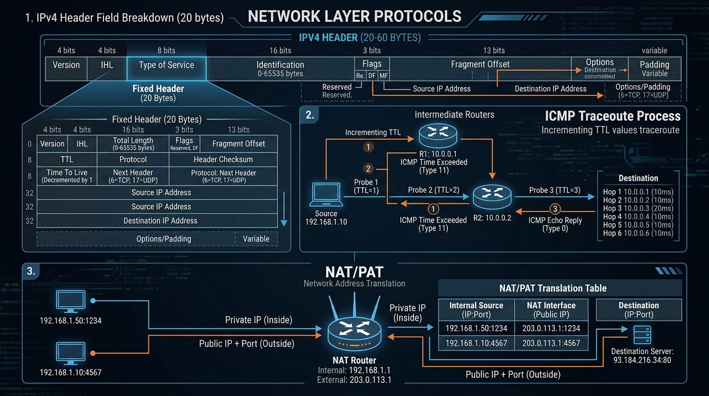

Learn the 20-byte IPv4 Header structure, packet fragmentation & MTU offset calculations, ARP MAC resolution, ICMP ping & traceroute mechanisms, and NAT/PAT translation.
The standard IPv4 Datagram Header consists of 20 fixed bytes (up to 60 bytes with optional fields).

When an IP datagram's total size exceeds the link layer's **MTU (Maximum Transmission Unit)** (e.g. 1500 bytes for Ethernet), intermediate routers divide the datagram into smaller **Fragments**.
Reassembly of fragments occurs ONLY at the ultimate destination host.
ARP (Address Resolution Protocol) maps a known logical 32-bit IP address to an unknown physical 48-bit MAC address on the local network.
FF:FF:FF:FF:FF:FF.ICMP (Internet Control Message Protocol) is used by network devices (routers, hosts) to communicate diagnostic error and control messages.
Sends an **ICMP Echo Request (Type 8)** to a target IP. Target responds with an **ICMP Echo Reply (Type 0)**. Measures Round-Trip Time (RTT) and packet loss.
Traceroute discovers the step-by-step router path to a destination using the **TTL field**:
TTL = 1. Router 1 decrements TTL to 0, drops packet, and sends back an **ICMP Time Exceeded (Type 11)** message. (Router 1 IP discovered!).TTL = 2. Router 2 drops packet → ICMP Time Exceeded. (Router 2 IP discovered!).NAT translates private RFC 1918 IP addresses (e.g. 192.168.1.x) into a single public IP address when traffic crosses a router toward the Internet.
| Inside Local (Private IP:Port) | Inside Global (Public IP:Port) | Outside Destination |
|---|---|---|
| 192.168.1.10 : 54321 | 203.0.113.5 : 10001 | 142.250.1.1 : 443 |
| 192.168.1.11 : 54321 | 203.0.113.5 : 10002 | 142.250.1.1 : 443 |